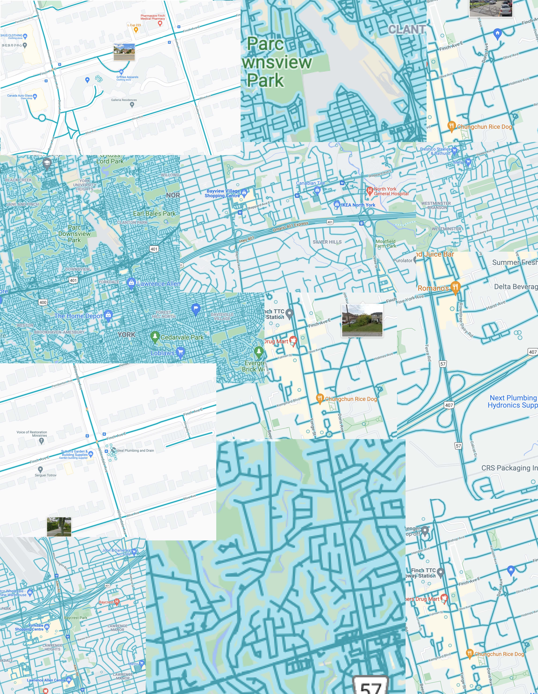

Week 1
Early Experiments


Space/Moon Simulator Software


Screen Shots

For the first stage of this assignment, I mainly experimented with the textural aspect of my data and aimed to test the flexibility of my tools. In this series of compositions, I used principles such as repetition and direction as a way to transform my images and data into a paintbrush. Additionally, my goal here was to achieve cycles/patterns that showcase the iteration of time during the pandemic, and eventually to be used as elements within the final layout.


Week 2
I used google docs as my main canvas and tool for this assignment which gives slightly more advanced options to its users to be able to adjust the levels and pictorial dynamics of their images. Accordingly, I used images that I had created in the previous stage in various orders and directions, and by editing the transparency and contrast I tried to achieve more depth and profundity which due to the limitations of my tools was however unsuccessful.


Furthermore, another method I experimented with was the use of my previously composed images as paintbrushes themselves. As seen in some compositions, again by using repetition and direction I attempted to arrange those elements in a way that they are seen as one particle/ shape.